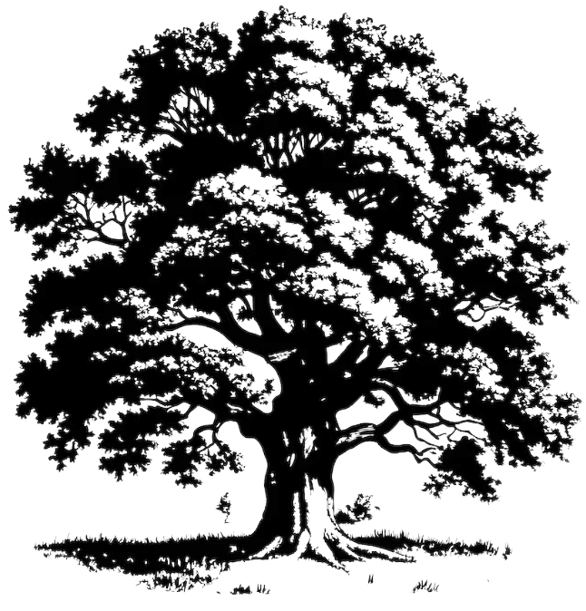

Калькулятор ветроустойчивости деревьев
Продвинутая версия
Деревья — не только украшение городов, но и сложные инженерные конструкции.
Каждый год ураганы и шквалистый ветер вырывают с корнем или ломают тысячи деревьев, создавая угрозу для жизни людей и
инфраструктуры. Почему одни деревья падают, а другие выдерживают даже самые сильные штормы? Ответ кроется в физике их
взаимодействия с ветром и грунтом.
Наш проект позволяет моделировать поведение одиночного дерева под ветровой нагрузкой с учётом типа корневой системы, свойств почвы, размеров кроны и прочности древесины. В основе лежат классические физические модели: дерево рассматривается как консольная балка на упругом основании. Это даёт возможность рассчитывать не только текущий угол наклона, но и предсказывать критические состояния — отрыв корней от почвы, опрокидывание или излом ствола.
В калькуляторе реализованы восемь инженерных формул: от простого расчёта ветровой нагрузки до определения скоростей, при которых дерево теряет устойчивость. Все вычисления автоматизированы, достаточно ввести параметры — и вы получите результат за секунду.
Симулятор позволяет наблюдать за поведением дерева в реальном времени. Можно менять скорость ветра и видеть, как меняется угол наклона, растёт напряжение в стволе и смещается точка опоры корней. Визуализация векторов сил и моментов помогает понять физику процесса — красные стрелки показывают воздействие ветра, синие — удерживающие силы грунта.
Проект включает базу данных с характеристиками различных пород деревьев и типов почв. В неё уже загружены дуб, сосна, берёза и основные грунты — чернозём, песок, глина, суглинок. Редактор позволяет добавлять новые виды и экспериментировать с параметрами.
Наш проект позволяет моделировать поведение одиночного дерева под ветровой нагрузкой с учётом типа корневой системы, свойств почвы, размеров кроны и прочности древесины. В основе лежат классические физические модели: дерево рассматривается как консольная балка на упругом основании. Это даёт возможность рассчитывать не только текущий угол наклона, но и предсказывать критические состояния — отрыв корней от почвы, опрокидывание или излом ствола.
В калькуляторе реализованы восемь инженерных формул: от простого расчёта ветровой нагрузки до определения скоростей, при которых дерево теряет устойчивость. Все вычисления автоматизированы, достаточно ввести параметры — и вы получите результат за секунду.
Симулятор позволяет наблюдать за поведением дерева в реальном времени. Можно менять скорость ветра и видеть, как меняется угол наклона, растёт напряжение в стволе и смещается точка опоры корней. Визуализация векторов сил и моментов помогает понять физику процесса — красные стрелки показывают воздействие ветра, синие — удерживающие силы грунта.
Проект включает базу данных с характеристиками различных пород деревьев и типов почв. В неё уже загружены дуб, сосна, берёза и основные грунты — чернозём, песок, глина, суглинок. Редактор позволяет добавлять новые виды и экспериментировать с параметрами.

Разработчики проекта: Исаев Валенитин, Сидоренко Вадим,
Научный руководитель: Левчук Марина Владимировна,
Лицей №2 "Престиж" городской округ Макеевка
Донецкая Народная Республика
Научный руководитель: Левчук Марина Владимировна,
Лицей №2 "Престиж" городской округ Макеевка
Донецкая Народная Республика